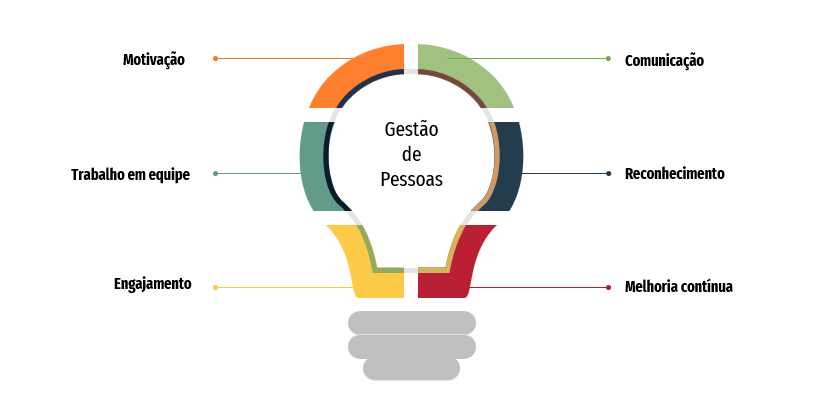
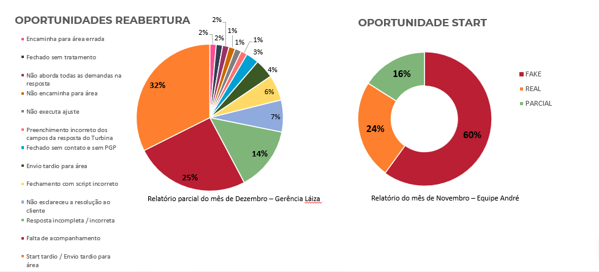

Projeto desenvolvido para um Processo Seletivo Interno (PSI) voltado à função de Supervisora de Atendimento.
A apresentação teve como objetivo demonstrar estratégias para desenvolver equipes de alta performance, abordando temas como planejamento, qualidade no atendimento, acompanhamento de indicadores, liderança e melhoria contínua dos processos.
Além da proposta de gestão, o projeto incluiu análises de resultados, identificação de oportunidades e elaboração de planos de ação para alcançar melhores resultados operacionais.


Imagem ilustrativa de um dos materiais desenvolvidos para o projeto.